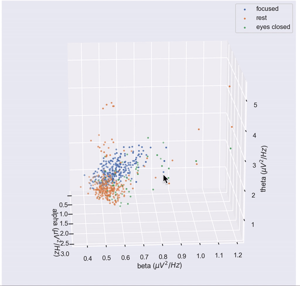
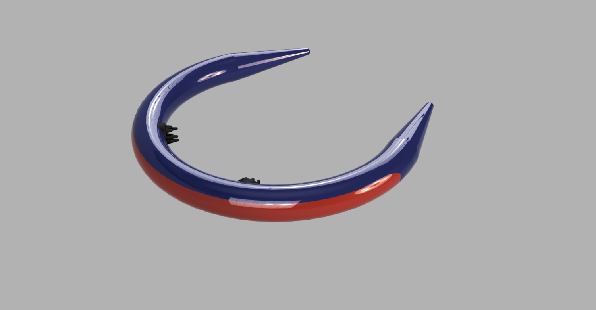

Week 3

Figured we'd start with something pretty! We made a visualization of your brainwaves (above, moving in real time) to make the interpretation of your mental state more intuitive.
Results

Building on the results from last week (left: clusters of mental states in the spectral feature space), we wanted to find out how generalizable our results are.
Above: plots of the distributions of time windows in each trial for 3 conditions
Remarks:
1. Qualitatively, it appears the 'focused' state remains similar across trials, days, and electrode setups. 2. Alpha waves appear in the eyes closed condition with varying degrees of strength and frequency (interestingly, some trials have bimodal distributions).
3. The rest state exhibits the most variance, presumably due to different levels of relaxation (in experiments, a fully peaceful mind is more difficult to induce than a fully preoccupied one).
Hardware
A reminder of the headband design:



We started on the challenge of fitting an EEG setup in a minimalistic headband
-
ModularEEG has created an open source board layout for EEG amplifiers. This board is about credit card sized hence it will likely not work for us. Most boards face the same problem as they require an instrumentation amplifier and precision resistors which are all large.
-
Possibility of mounting on flexible PCB to fit around the headband and utilise space more efficiently
-
Considerations for microcontroller – use a raspberry pi zero as it has necessary power and small form factor.
For next week:
Look into MUSE head band as it has needed hardware so we can reverse engineer it. It is possible to find board schematics online such that it can shine some light on what corners to cut to save space